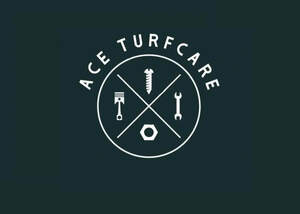

Trade Mark Journal No.2025/046 14 November 2025
UK00004284364 27 October 2025 (7,8,37)

- Class 7
- Lawn mowers; Garden tractors for mowing lawns; Electric lawn mowers; Lawn and garden tilling machines; Riding lawn mowers; Gasoline lawn mowers; Mechanical lawn mowers; Power-operated lawn and garden tillers; Lawn trimming machines; Lawn raking machines; Lawn mowing attachments for vehicles; Electric lawn trimmers; Power-operated lawn edgers; Lawn aerators [machines]; Lawn rakes [machines]; Lawn cutting machines; Power-operated lawn aerators; Lawn and garden string trimmer spools; Seated [ride on] lawn mowers; Lawn edge trimmers [machines]; Lawn clippers [machines]; Lawn rolling machines; Chippers [power lawn and garden tools]; Lawn sweepers [machines]; Cultivators [power lawn and garden tools]; Shredders [power lawn and garden tools]; String trimmers [power lawn and garden tools]; Power blowers for lawn debris; Lawn rolling implements for attachment to land vehicles; Grass edging machines; Grass trimming machines; Garden tilling machines; Electric garden scythes; Electric grass shears; Electric grass trimmers; Machines for cutting grass; Grass cutting machines; Agricultural machines for grass cutting; Electric garden shredders; Mowing machines [electric]; Sprayers [machines] for garden use in spraying weedkillers; Trimmer heads for mowing machines ; Scarifying machines for garden use; Sprayers [machines] for garden use in spraying insecticide; Machine mowers; Garden rotavators; Electric apparatus for the care of gardens; Electric garden pumps; Garden rollers [machines]; Flail mowers; Agricultural machines for grass collecting; Mowing machines [petrol].
- Class 8
- Hand-operated lawn edgers; Hand-operated lawn aerators; Lawn aerators [hand tools]; Lawn aerators [hand-operated tools]; Lawn edge trimmers [hand-operated tools]; Lawn rakes [hand-operated tools]; Lawn rakes [hand-operated ones only]; Lawn clippers [hand instruments]; Lawn rollers [hand-operated tools]; Agricultural, gardening and landscaping tools; Garden rollers [hand-operated]; Sprayers [hand-operated tool] for garden use in spraying weedkillers.
- Class 37
- Lawn mower blade sharpening; Maintenance and repair of garden tools.
Tyler Hughes